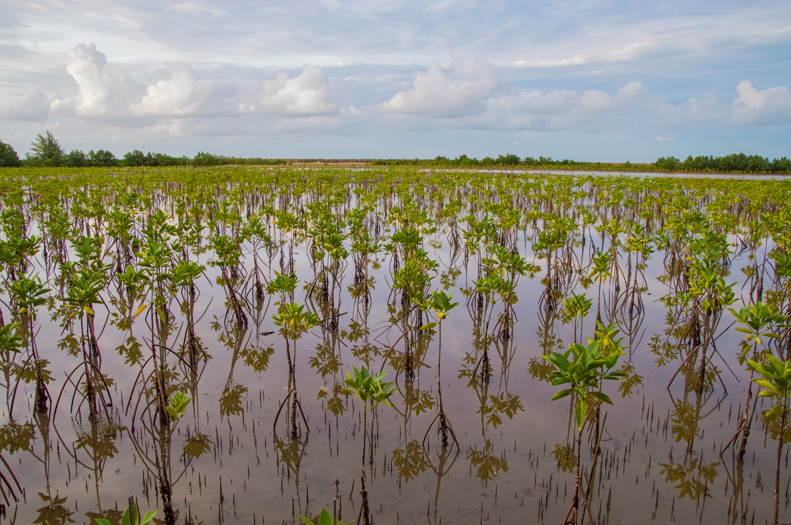
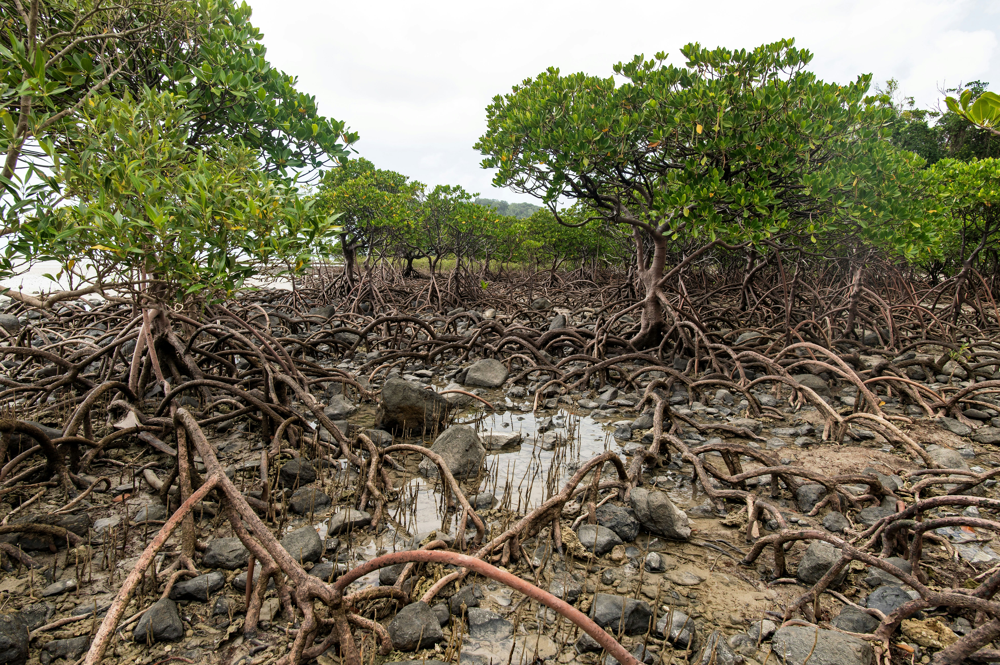
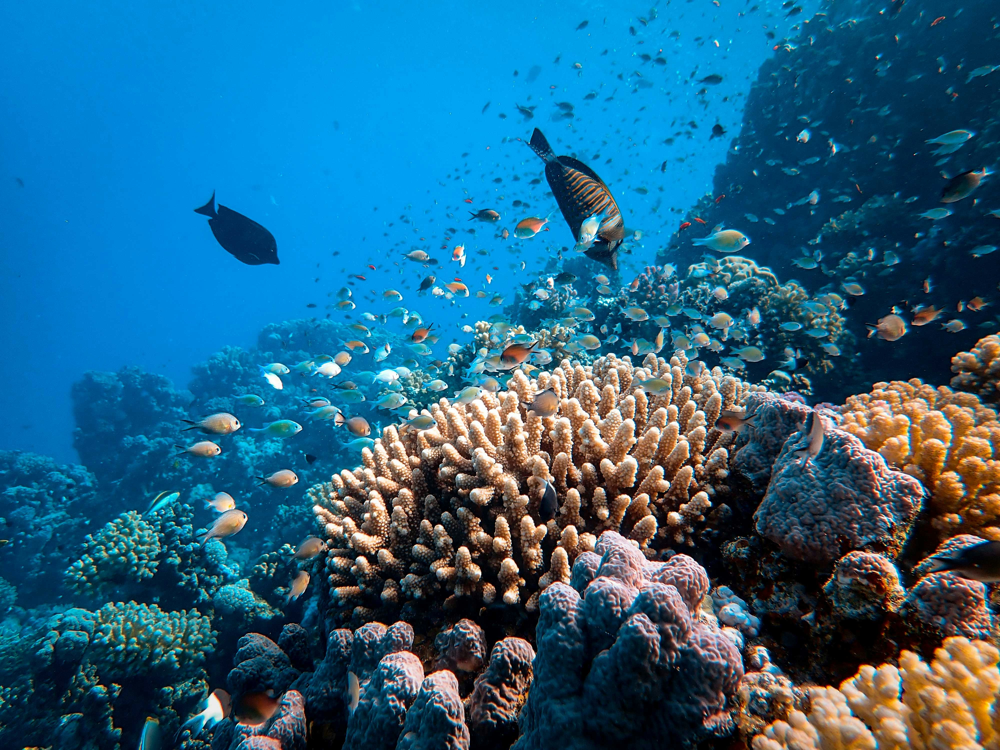
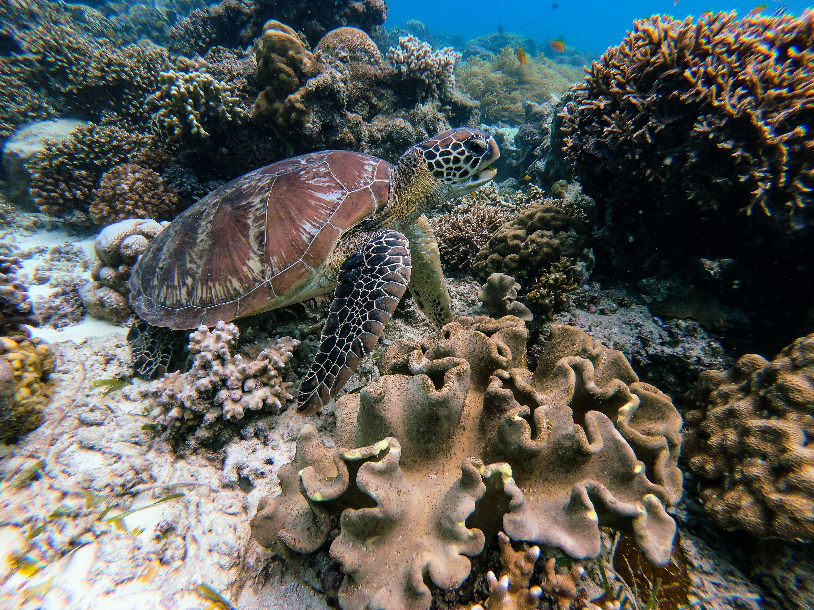
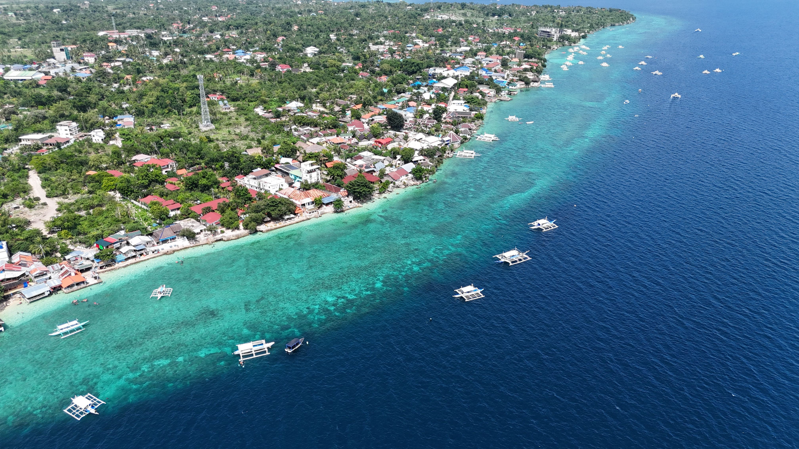
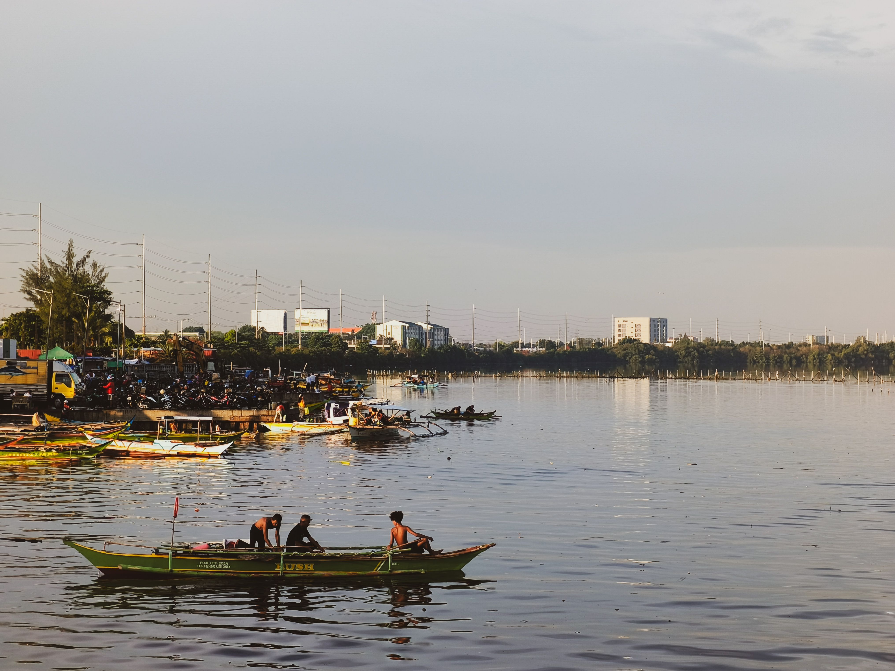

Explore
Restoring coastal ecosystems and protecting marine life across the world.
Our Core Pillars
Mangrove Restoration


Understanding Mangrove Restoration
Mangrove restoration focuses on recovering and protecting mangrove forests in coastal areas where they have been damaged or lost. These forests play an important role in maintaining healthy coastal ecosystems. They provide shelter and nursery habitats for different marine species, help protect shorelines from waves and erosion, and support a wide variety of plants and animals. However, mangroves continue to face threats from human activities, coastal development, and environmental changes.
Restoring mangrove forests helps damaged coastal areas recover and continue providing benefits to both people and nature. Restoration efforts may include planting suitable mangrove species, protecting existing forests to allow natural regeneration, and restoring natural water flow in areas where it has been disrupted. These approaches help create suitable conditions for mangroves to grow and recover. Through proper restoration and protection, mangrove ecosystems can continue supporting biodiversity and healthier coastal environments.
References and Further Reading
Marine Conservation


Understanding Marine Conservation
Marine conservation focuses on protecting oceans, marine life, and the natural habitats that support them. Marine ecosystems include coral reefs, seagrass beds, and other coastal and ocean environments where different species live and interact. These ecosystems are important because they support marine biodiversity, provide food, and help sustain coastal communities. They also contribute to a healthy ocean by providing habitats for marine species and supporting natural environmental processes. Marine conservation aims to protect these ecosystems and the resources they provide so they can continue supporting both people and marine life in the future.
Importance of Marine Ecosystems
Marine ecosystems play an important role in supporting marine life and maintaining healthy ocean environments. Coral reefs provide shelter, food, and breeding areas for many fish and other marine species. They also help protect coastlines from strong waves and storms. Seagrass beds serve as feeding and nursery areas for fish, sea turtles, and other marine animals. Aside from supporting wildlife, these habitats also contribute to fishing, tourism, and the livelihoods of coastal communities. Protecting marine ecosystems helps preserve biodiversity and maintain the natural resources that people and marine animals depend on.
Threats to Marine Ecosystems
Despite their importance, marine ecosystems continue to face threats from human activities and environmental changes. Pollution, improper waste disposal, overfishing, and harmful fishing practices can damage marine habitats and put marine animals at risk. Coastal development and activities such as boat anchoring can also affect sensitive habitats like seagrass beds. Climate change adds further pressure through rising ocean temperatures and increasing ocean acidity. These changes can stress coral reefs, cause coral bleaching, and affect marine species that are sensitive to changes in their environment. When these problems continue, they can disturb the balance of marine ecosystems and affect communities that depend on the ocean.
Marine Conservation Practices
Protecting marine ecosystems requires responsible management and cooperation among governments, organizations, and local communities. Marine protected areas help conserve important habitats by limiting certain activities that may harm marine life. Sustainable fishing practices also help reduce pressure on fish populations and support the long-term availability of marine resources. Other conservation efforts include protecting coral reefs and seagrass beds, restoring damaged habitats, and reducing pollution that reaches coastal waters. Involving local communities in these efforts is equally important because their participation can help make conservation programs more effective and sustainable.
References and Further Reading
Water Protection


Understanding Water Protection
Water protection refers to the efforts made to maintain clean water, prevent pollution, and preserve natural water resources. It focuses on protecting bodies of freshwater, such as rivers, lakes, and streams, from harmful activities that can affect water quality. These water sources provide essential resources for people, plants, and wildlife. Water protection also involves addressing human activities, such as improper waste disposal and the release of harmful substances into waterways. Through responsible practices and proper management of water resources, we can help maintain clean and safe water for present and future generations.
Importance of Freshwater Ecosystems
Freshwater ecosystems are important because they provide habitats for different plants and animals, support biodiversity, and supply water for communities. Rivers and lakes serve as habitats for fish, aquatic plants, and other organisms. They also provide water for household use, agriculture, and other human activities. In addition, healthy freshwater systems help maintain ecological balance and support the needs of surrounding communities. Protecting these ecosystems helps preserve water resources, maintain biodiversity, and support both people and wildlife.
Threats to Freshwater Ecosystems
Freshwater ecosystems face several threats caused by human activities and environmental changes. Improper waste disposal, plastic pollution, untreated wastewater, and chemical contaminants can reduce water quality in rivers and lakes. Agricultural activities may also contribute to water pollution when fertilizers and other substances are carried into waterways through surface runoff. In addition, mining and unsustainable land use can introduce harmful contaminants into freshwater environments. Climate change also affects these ecosystems through changes in water temperature and other environmental conditions. These threats can damage aquatic habitats, affect the survival of freshwater organisms, and reduce the availability of clean water.
Connection Between Freshwater and Coastal Ecosystems
Freshwater and coastal ecosystems are interconnected through natural water systems. Rivers transport freshwater from inland areas toward estuaries and coastal environments, where freshwater can mix with seawater. During this process, water may also carry sediments, nutrients, and pollutants from surrounding land areas into coastal waters. This means that activities happening far from the coastline can still affect the condition of nearby seas and marine habitats. For example, improper waste disposal along rivers may contribute to pollution that eventually reaches coastal areas. Understanding this connection is important because protecting aquatic environments requires attention not only to oceans and coastlines but also to the rivers, lakes, and watersheds connected to them. Protecting these water systems helps support healthier freshwater and coastal ecosystems.